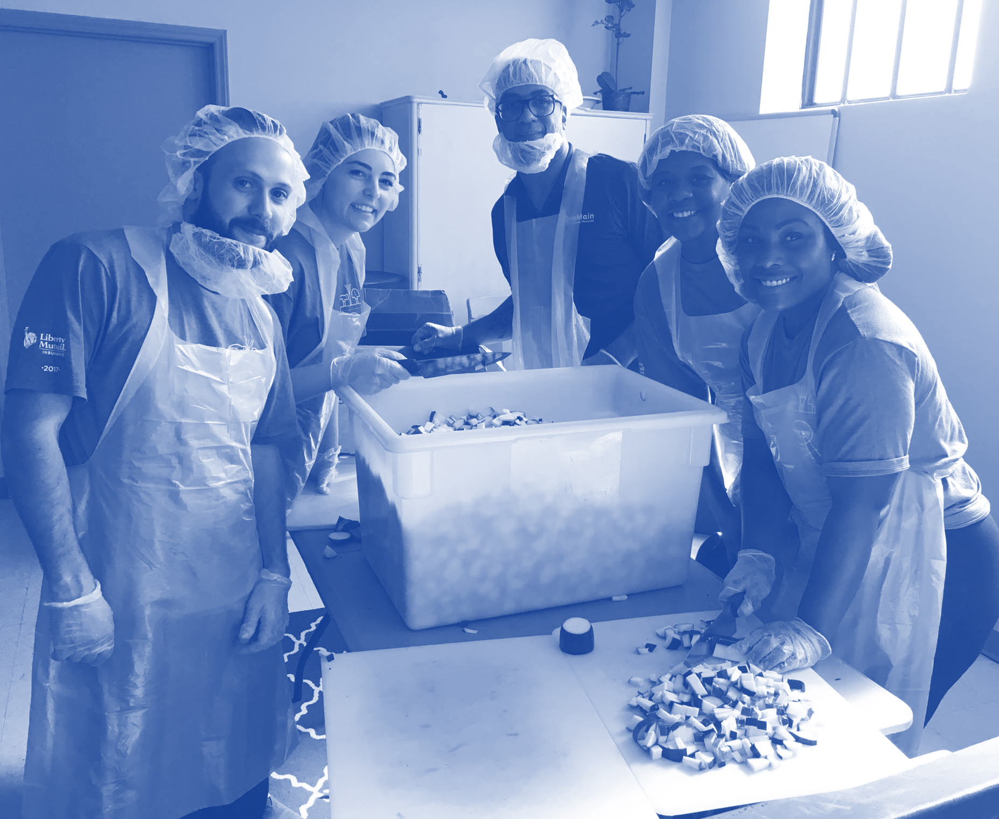

Design Challenge
The first step of this project was to define the Design Challenge. This intital step in IDEO's Human Centered Design Toolkit provides clarity on how to approach the design problem. The purpose of this step is to formulate an action-based question that drives the project by providing specific areas of focus for the designer.